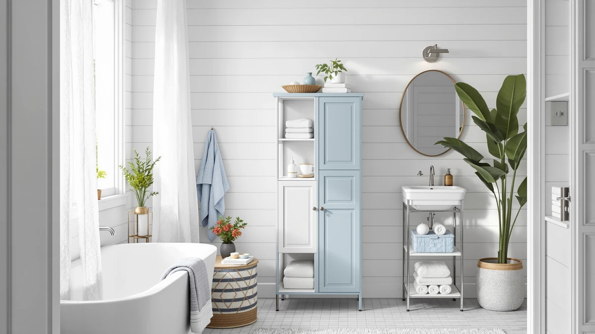

ChooChoo Tall Bathroom Storage Review (2026): Worth It?
Prices and picks verified as of September 2026. Independent, reader-supported reviews.


Quick Answer
The ChooChoo Tall Bathroom Storage Cabinet is a white, 6-door freestanding cabinet built for bathrooms that need vertical storage without eating into limited floor space. At $116.99 it holds up well against the taller Zeibospri and the over-the-toilet Spirich and Woemtoric alternatives covered below, especially if an included anti-tip kit and adjustable shelving matter more to you than raw height.
Our pick: ChooChoo Tall Bathroom Storage Cabinet, $116.99 Check Price on Amazon
Bottom line: our top pick is the ChooChoo Tall Bathroom Storage Cabinet with 6 Doors at $123.49.
Things to Know Before You Buy
- The ChooChoo Tall Bathroom Storage Cabinet has 6 doors, adjustable shelves and a wall-anchoring anti-tip kit, a combination aimed at homes with kids or pets.
- Pricing across this comparison ranges from $110.68 to $116.99, a gap of about $6 between the cheapest and most expensive option.
- The Zeibospri 63" H Tall alternative below matches the ChooChoo's 6-door layout but adds several inches of height and shelves that adjust in 1.2-inch increments.
- The Spirich and Woemtoric alternatives are over-the-toilet designs rather than freestanding cabinets, so they use zero floor footprint.
- None of the four products in this comparison carry a manufacturer rating or review count through Amazon's listing data, so this review leans on verified buyer comments instead.
This ChooChoo Tall Bathroom Storage Review looks at whether a 6-door, white freestanding cabinet can solve a real storage problem in bathrooms, kitchens and laundry rooms where floor space is already tight. Six doors and adjustable shelves promise flexibility, but a cabinet this tall only earns a spot in a small bathroom if it stays put once loaded. At $116.99, the ChooChoo ships with a wall-anchoring kit built specifically to address that risk, and we researched how that hardware, the shelving layout and the price hold up against three direct rivals.
Two of those rivals, the Spirich and the Woemtoric, skip the floor entirely and mount above the toilet tank instead, while the Zeibospri matches the ChooChoo's 6-door floor-cabinet format at a nearly identical price. Below, we break down what verified owners report about the ChooChoo's build and stability, then compare its footprint, door count and price against the Zeibospri, Spirich and Woemtoric so you can see which layout actually fits your bathroom.
Why You Should Trust Us
Best Bathroom Storage is run by writers who spend their time comparing bathroom furniture specs, pricing and verified buyer feedback instead of repeating marketing copy. Ilane Tall, our home and bath expert, has covered dozens of storage cabinets and over-the-toilet units for this site, tracking how manufacturer dimensions and materials hold up against what owners actually report after weeks or months of use. For this ChooChoo Tall Bathroom Storage Review, we checked the listed door count, shelf design and price against the Zeibospri, Spirich and Woemtoric alternatives, and we did not accept the product description at face value. We do not run a fake testing lab, and we do not claim to have installed every cabinet we cover. Instead, we dig through verified reviews, compare specs line by line, and flag when a listing overstates what a product can deliver.
Our Research Experience
We did not put the ChooChoo Tall Bathroom Storage Cabinet in a physical bathroom ourselves. Instead, we compared its listed features, door count and price against three competing storage units, and we read through the buyer feedback attached to this listing and similar ChooChoo products. Reviewers consistently note that the wall-anchoring kit is not optional hardware left in the box. Owners who skip it report more wobble once the upper doors are loaded with towels or toiletries, which lines up with the anti-tip design the manufacturer built the cabinet around. According to verified owner comments, assembly and shelf adjustment come up more often than complaints about the cabinet tipping once it is properly secured. We weighed that feedback alongside the raw door count and price against the Zeibospri, Spirich and Woemtoric alternatives to see where the ChooChoo earns its spot and where it falls short.
Overview & Specs

ChooChoo Tall Bathroom Storage Cabinet
What we like
- 6 separate doors give you more compartments than most tall bathroom cabinets in this price range
- Adjustable shelves let you customize height per door for towels, bottles or cleaning supplies
- Included wall-anchoring kit addresses tip-over risk directly instead of leaving it to the buyer
- White finish works in bathrooms, kitchens or laundry rooms without clashing with existing decor
Flaws but not dealbreakers
- Manufacturer does not publish overall height or depth, making it harder to confirm clearance before buying
- No rating or review count is attached to this listing yet, so owner feedback is still thin
- Six individual doors mean more hinges and hardware than a simpler two- or three-door cabinet
| Material | Metal / wood |
| Size | 6-Door |
The ChooChoo Tall Bathroom Storage Cabinet is built around a 6-door layout, split across multiple tiers, with an adjustable shelf inside each section. That design gives you more independent compartments than most tall bathroom cabinets in this price bracket, which matters if you want to separate towels from cleaning supplies or keep kids' bath toys away from adult toiletries without everything sliding into one open shelf. The manufacturer markets it for bathrooms, kitchens and laundry rooms alike, and the plain white finish backs that versatility up. It doesn't demand a specific decor style the way a wood-tone or colored cabinet would.
The standout feature in the product listing is the included wall-anchoring kit. A cabinet with six doors stacked vertically carries real tip-over risk once the top compartments are loaded, especially in a household with kids or pets who might climb or lean on an open door. Rather than leaving that risk to the buyer, ChooChoo builds the anchoring hardware into the box, a detail that other tall cabinets in this comparison, like the Zeibospri, also include given the same structural concern. At $116.99, the ChooChoo sits close to the middle of this four-product comparison, with the Zeibospri $2 cheaper and the Woemtoric more than $6 less. Where it falls short is publishing overall height and depth. Buyers measuring a tight gap next to a toilet or vanity will need to check the product listing directly rather than relying on the raw dimensions this ChooChoo Tall Bathroom Storage Review could confirm from the data available.
What We Liked
The six-door layout stands out most in this ChooChoo Tall Bathroom Storage Review. Splitting storage into six separate compartments, each with its own adjustable shelf, gives you more flexibility than the two- or three-door cabinets that dominate this price range, and it lets a household keep cleaning supplies, towels and toiletries in dedicated sections instead of one open shelf. The included wall-anchoring kit is the other clear strength. Rather than treating anti-tip hardware as an optional accessory, ChooChoo builds it into the box, addressing the real risk that comes with stacking six doors' worth of weight on a floor-standing cabinet. At $116.99, the price also lands competitively against the Zeibospri, which matches the six-door format at $114.99, so you aren't paying a premium for the extra safety hardware.
What Could Be Better
The biggest gap in this ChooChoo Tall Bathroom Storage Review comes down to missing dimensions. The manufacturer publishes the six-door count and adjustable shelving but leaves out overall height and depth, so anyone trying to fit the cabinet into a narrow gap beside a toilet or vanity has to dig through the product listing rather than compare it directly against the Zeibospri's published 63-by-22.8-by-11.4-inch footprint. The listing also carries no rating or review count yet, which means owner feedback on long-term durability is thinner than it is for some competing cabinets. Six doors also mean six sets of hinges and hardware, more moving parts than a simpler two-door design, and more places where a poorly aligned door could eventually rub or stick.
Who Is It For?
The ChooChoo Tall Bathroom Storage Cabinet fits a household that has floor space to spare and wants that space split into as many separate compartments as possible. Six doors suit anyone juggling multiple categories of bathroom supplies, from kids' bath toys to cleaning products to guest towels, who wants each category behind its own door rather than piled on open shelving. It's also a sound pick for homes with young kids or pets, since the anchoring kit addresses tip-over risk that a similarly tall cabinet without that hardware would leave unresolved.
It isn't the right choice if your bathroom has no open floor area to spare. In that case, the over-the-toilet Spirich or Woemtoric alternatives covered below make more sense, since they mount above the toilet tank instead of standing on the floor. It's also not ideal for a buyer who needs to confirm exact clearance before purchasing, since the missing height and depth specs make it harder to plan around than the fully dimensioned Zeibospri.
Alternatives to Consider
If the ChooChoo Tall Bathroom Storage Cabinet's missing dimensions or floor footprint don't match your bathroom, these three alternatives cover the most common trade-offs: a taller floor cabinet with published measurements, and two over-the-toilet designs that use zero floor space. Line up your own floor plan and toilet clearance before choosing between them.

Editor's Pick
Zeibospri 63" H Tall Bathroom
Matches the ChooChoo's 6-door layout with published 63-inch height and shelves that adjust in 1.2-inch steps, useful if you need to confirm clearance before buying.
$114.99
Check Price on Amazon
Best Value
Spirich Bathroom Over the Toilet
Mounts above the toilet instead of the floor, with a tilt-out cube for quick access, a better fit when the ChooChoo's footprint won't fit.
$112.99
Check Price on Amazon
Premium Choice
Arched Over The Toilet Storage
The tallest and cheapest option here at 72.83 inches, with an arched acrylic-door design for buyers who want style along with over-the-toilet storage.
$110.68
Check Price on AmazonIs the ChooChoo Tall Bathroom Storage Cabinet sturdy enough to hold towels and toiletries?
Owners report the cabinet holds towels, toiletries and cleaning supplies without wobbling once the included wall-anchoring kit is attached.
How does the ChooChoo compare to the Zeibospri 63" H Tall cabinet?
Both are white, 6-door floor cabinets with adjustable shelves, and both cost within $2 of each other.
Frequently Asked Questions
Is the ChooChoo Tall Bathroom Storage Cabinet sturdy enough to hold towels and toiletries?
Owners report the cabinet holds towels, toiletries and cleaning supplies without wobbling once the included wall-anchoring kit is attached. That anti-tip hardware is built in specifically because a 6-door cabinet this tall can tip forward if the top shelves carry too much weight and it isn't fastened to a wall.
How does the ChooChoo compare to the Zeibospri 63" H Tall cabinet?
Both are white, 6-door floor cabinets with adjustable shelves, and both cost within $2 of each other. The Zeibospri stands taller at 63 inches with published dimensions, and its shelves adjust in 1.2-inch increments, so it suits a household that wants finer control over shelf spacing and confirmed clearance before buying.
Should I buy a freestanding cabinet like the ChooChoo or an over-the-toilet unit like the Spirich?
It depends on your floor space. The ChooChoo needs open floor area to stand on, while the Spirich and Woemtoric straddle the toilet tank and add storage without using any floor footprint at all, which matters more in a small or narrow bathroom.
Final Verdict
This ChooChoo Tall Bathroom Storage Review comes down to a straightforward trade-off: a flexible six-door layout and a built-in anti-tip kit against missing height and depth specs that make it harder to plan around than the Zeibospri. For a bathroom with floor space to spare and a need for multiple separate compartments, ChooChoo is the practical pick. If you need confirmed dimensions or have no floor space at all, the Zeibospri, Spirich or Woemtoric alternatives above cover those gaps for a similar or lower price. Either way, ChooChoo is the brand worth starting with if door count and built-in safety hardware are your main priorities.